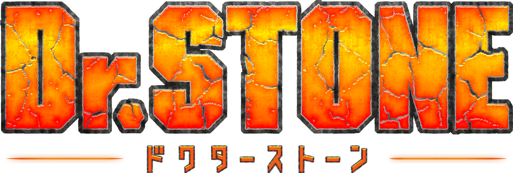

Nuestras Reseñas
Tate No Yuusha No Nariagari (The Rising of the Shield Hero)
Los Cuatro Héroes Santos son un grupo de jóvenes del Japón actual que son convocados al reino de Melromarc para convertirse en sus salvadores. Melromarc es un reino que sufre por las Olas de Calamidad, un misterioso fenómeno donde cientos y miles de monstruos arrasan la tierra y hacen daño a los ciudadanos cada cierto periodo de tiempo. Los cuatro héroes reciben respectivamente una espada, una lanza, un arco y un escudo para vencer a estas Olas. Entre ellos destaca Naofumi Iwatani, un joven otaku que por desgracia recibe la maldición de ser el “Héroe del Escudo”. Armado con un pobre escudo y falto de experiencia, Naofumi empieza su aventura con muchas más dificultades.
Kimetsu No Yaiba (Demon Slayer)

La historia esta cronológicamente ubicada durante la era de Taisho, que duró de 1912 a 1926, aquí el protagonista es Tanjirou Kamado, un chico que para mantener a su familia se dedica a vender carbón, desafortunadamente un día al regresar del trabajo descubre que su familia fue atacada y asesinada por un demonio, mientras lamenta la muerte de su familia descubre que su hermana Nezuko tiene posibilidades de sobrevivir, para su mala sorpresa se ha convertido en un demonio, pero aún hay esperanza pues gracias a que se encuentra con un asesino de demonios llamado Giyu Tomioka, descubren que Nezuko aún tiene recuerdos sobre Tanjirou y su familia, lo cual hace que esta no ataque a su hermano.
Dr. Stone
Dr. Stone es un anime del género shounen, post- apocalíptico y comedia que tiene como protagonista a Senku, un joven que destaca por su extraordinaria inteligencia y su amigo, Taiju, quien goza de una gran fuerza son petrificados por una luz cegadora junto a toda la humanidad. 3700 años después, Senku “despierta” y descubre que el mundo tal como lo conocía se ha desmoronado, será así que se encomienda regresar a todos a la normalidad usando la ciencia, ¡que la nueva era comience!